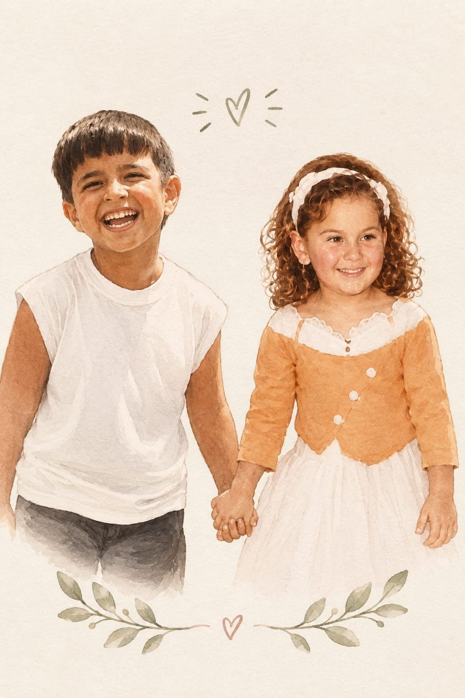

Este é o verso — vira para o convite em 5 segundos… toque para virar

1 Coríntios 13:4-7
O amor é paciente, o amor é bondoso. Não inveja, não se vangloria, não se orgulha. Não maltrata, não procura seus interesses, não se ira facilmente, não guarda rancor. Não se alegra com a injustiça, mas se alegra com a verdade. Tudo sofre, tudo crê, tudo espera, tudo suporta.
Convidam para celebrar seu casamento
Tereza Zago e
Vidal ZagoPais do noivo
Alaide de Morais e
Edmilson AndradePais da noiva
14 de novembro de 2026
às 16:30 horas
para o grande dia
Igreja Nossa Senhora do Perpétuo Socorro
Av. Deputado José Alves dos Santos, 1439
Jardim dos Pássaros — Maringá
Por favor, cheguem com pontualidade.
Até 15 · 10 · 2026
Confirmar presençaToque para confirmar sua presença.